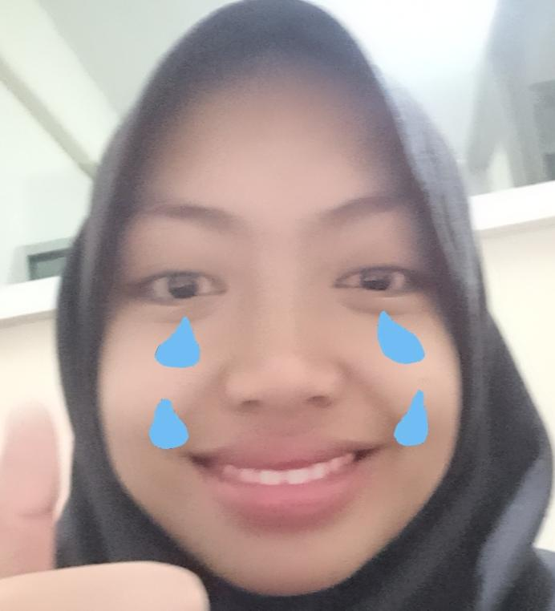

Mahasiswi Teknik Elektromedis | Pembelajar Cepat & Berdedikasi
📍 Surakarta, Jawa Tengah, Indonesia
“Jika kita punya kesempatan ambil saja, ini saatnya mempelajari sesuatu.”
Saya adalah mahasiswi aktif Teknik Elektromedis di Universitas Muhammadiyah PKU Surakarta. Memiliki keterampilan komunikasi yang efektif dalam bahasa Indonesia maupun bahasa Inggris, saya selalu bersemangat untuk mempelajari hal baru, beradaptasi dengan cepat, dan menghadapi berbagai tantangan akademik maupun profesional.
Saya percaya bahwa membangun hubungan yang baik antar generasi—mulai dari teman sejawat, senior, hingga dosen dan praktisi industri—adalah kunci untuk tumbuh bersama dalam lingkungan yang dinamis.
Mengelola administrasi dan penyelenggaraan kegiatan keagamaan secara terstruktur.
Melatih kedisiplinan, kepemimpinan, dan kerja sama tim melalui berbagai kegiatan luar ruangan.
Menjadi jembatan komunikasi antara mahasiswa dan pihak akademis fakultas.
Menjaga kerapian, pengelolaan peminjaman, dan keteraturan ruang belajar.
Mempelajari pemeliharaan, kalibrasi, dan pengembangan teknologi peralatan medis modern.
Mengoordinasikan kebutuhan akademis kelas dan memfasilitasi diskusi dengan dosen penyampaian materi.
Memfasilitasi layanan sirkulasi buku dan menjaga kerapian inventaris perpustakaan.
Aktif dalam perkemahan, penjelajahan, serta berpartisipasi dalam acara pelantikan resmi kepolisian.
Bertanggung jawab atas jalannya acara, penggalangan dana sosial, serta kegiatan bakti masyarakat.
Sarjana Terapan / S1 Teknik Elektromedis
2024 — 2028Aktivitas Organisasi: Pengurus Rohani Islam & Pramuka Kampus. Berkelanjutan aktif mendukung kolaborasi alumni dan pihak civitas akademika.